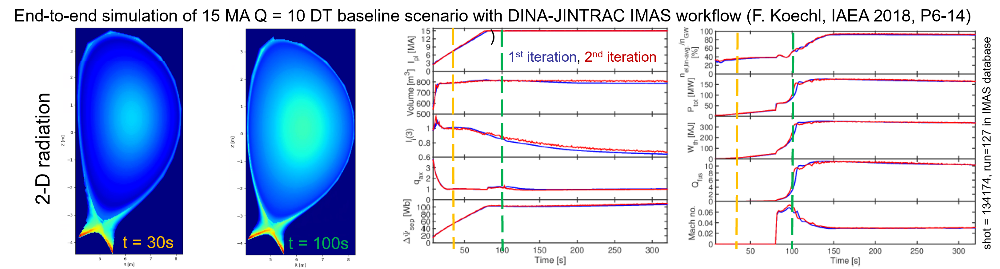

Open sourcing IMAS
status, challenges and opportunities
Olivier.Hoenen@iter.org**ITER Organization, Route de Vinon-sur-Verdon, CS 90 046, 13067 St. Paul Lez Durance Cedex, France
Outline
- Introduction to IMAS
- Open sourcing at ITER
- Challenges and opportunities
Introduction to IMAS
What is IMAS?
The Integrated Modelling & Analysis Suite is the collection of physics software that will be used to support ITER operations and research as defined in the ITER Integrated Modelling Programme...
... it comprises plasma modelling tools for systematic planning (evaluate candidate plasma operating scenarios and assist in the development of plasma control strategies) and analysis of each ITER discharge.
A brief history
- 2003: the Integrated Tokamak Modelling (ITM) starts discussing common data ontology in EU
- 2011: start of IMAS design and development at the ITER Organization (IO), building upon ITM concepts
- 2015: first IMAS prototype published 1 (version controlled ontology: 3.2.0, 30 classes)
- 2017: WEST tokamak uses IMAS in production for its plasma reconstruction chain 2
- 2021: Heating and current drive workflow in IMAS 3
- 2023: IMAS workflow for energetic particle stability 4
- 2024: end of version 3 development (3.42.0, 81 classes), introducing version 4
IMAS software stack
Applications
- Standalone physics codes
- Data processing pipelines or workflows
- Multi-machines databases
Generic tools
- Data access, storage and manipulation
- Data visualisation
- Simulations execution and management
Data model
- Machine independent data structures
- Can be used for code coupling
- Metadata and provenance
IMAS software stack
Applications
Generic tools
Data model
Data model
- Covers simulation and experimental data
- Made of Interface Data Structures (IDS)
- Described in XML in the Data Dictionary
- Made machine agnostic by design
- Used in experiments (e.g. WEST, ITER)
- Mapping of existing experiments data
- Support validation of ITER applications
- Can serve as a data standard for tokamaks fusion!
Data dictionary
- Describes the hierarchical structures in XSD/XML
- Has strict rules for modifications (active vs alpha IDS)
- Changes driven by the community via ITER JIRA trackers
Generic tools
data access


visualisation

workflows


databases

Applications
Energetic particles

Synthetic diagnostics
SOL and PWI


High-fidelity plasma simulator

Open sourcing IMAS
A long journey
- 2006: ITER agreement
-
2012: repositories in VCS
Atlassian (JIRA, Bitbucket, Bamboo)
password protected (ITER account) - 2019: software license discussions
-
2022: modified BSD license,
access via cooperation agreement -
2024: fusion private sector workshop,
listing software IO generated IP,
approved open sourcing GIP codes - 2025: move first repositories to GitHub


https://github.com/iterorganization

IMAS-Data-Dictionary (DD)
For the definition and documentation of IMAS IDS
- IDS schemas definition

- Light Python code (build, CLI tool)

- For all questions and requests
- Documentation on readthedocs
- Package available on PyPI
IMAS-Python
For accessing and manipulating IDS in Python
- Source code under
- Documentation, package on PyPI
- DD selection & conversion at runtime
- Lazy loading, metadata, ducktyping
- I/O with
imas-corenot open yet - Self-described I/O with netCDF format
# create and explore IDS
import imas
from imas.util import inspect
ids = imas.IDSFactory("4.0.0")
equil = ids.equilibrium()
inspect(equil)
print(equil.time.metadata.units)
# fill-in data in IDS
equil.ids_properties.homogeneous_time=1
equil["ids_properties/comment"]="simple test"
equil.time=[1.0]
# save IDS into netCDF
fout=imas.DBEntry("myequil.nc","w")
fout.put(equil)
fout.close()
# read IDS from netCDF
with imas.DBEntry("myequil.nc","r") as fin:
eq = fin.get("equilibrium",lazy=True)
print(eq.ids_properties.comment)
Plasma Control System Simulation Platform
- To develop, test, integrate controllers for ITER
- Powered by MATLAB Simulink®
- Available modules and models under

Available soon on GitHub

IDS-Validator
- Python CLI tool for checking validation rulesets on IDS values
- Rules implemented as functions with decorators
- Generic or use-case specific rules (tokamak, code)
GGD-VTK plugin
- ParaView plugin to visualise meshes stored as GGD2 in IDS
- More readers: 1D/2D profiles, beams, lines of sight...
- Access to data via imas-python

SimDB + Dashboard
- Tools to build, share and explore databases of IMAS simulations
- CLI client, remote server, REST API
- Web dashboard to query & compare simulations
Challenges and opportunities
Software with background intellectual property (BIP)
- IMAS relies on software developed within ITER Members (BIP)
- IO invests effort in using/combining/extending codes in IMAS (GIP)
- IO asked code owners about the possibility to release their BIP as open source → a general trend in fusion?

Contributing back
A key aspect for project sustainability, can take several forms
| type | details | example at IO |
|---|---|---|
| code base | tests, bug reports, discussions | TORAX |
| developing new features | MUSCLE3 | |
| code snippets | Easyconfigs | |
| recognition | promote use at different sites | EasyBuild |
| synergies with development of other software | UDA |
Adapting a code to IMAS
- Why?
-
- code shall run within ITER suite
- benchmarking exercise with similar codes
- standardize machine description
- How?
-
- I/O data must be defined by following the IMAS DD
- non-intrusive adaptation with a wrapper
- depends on targetted use (standalone, coupling, ...)
- License
-
- always add a license for your source code
- consider open licenses and open repositories
Mapping existing data in IMAS
- Motivations
-
- prepare ITER operation: validate tools, training
- prepare more ambitious multi-machines databases
- use available IMAS application to improve modelling capability in given areas
- Caveats
-
- involve a large effort from experts (sparse resources)
- non-backward compatible changes in IMAS DD
- lack of immediate pay off
- Mitigations
-
- targetted effort, identify success stories
- share mappings and experience on open platforms6,7
Migrating to a new developer platform
Reasons: - de facto standard for most open source projects - immense pool of tools, online resources - integrate all modern CI/CD pipelines, features freely available Difficulties: - documentation adaptation - clash of names (packages, etc...) - transition period in-between two platforms (if migration can not be done in one go) Adapting communication channels - mapping effort for exp data to support validation of IMAS apps - reduction of the number of dupplicated software, and concentration of the effort (long term) - FAIR data + opening of the metadataLimitations and perspectives
Towards a data standard for the fusion community
- Large, complex, evolving model (nesting)
→ simplify with standard geometry, grids - Mixing data model & interfaces
→ separate interfaces for flexibity - Non-backward compatible changes
→ exceptional for active IDS, mitigated? - Some IDS lean towards tokamaks
→ more involvement from stellarators - Initial focus on data producers
→ balance with consumers needs
Summary
- GIP software at IO can now be made open source
- IMAS-Data-Dictionary, IMAS-Python, PCSSP open access
- Software with BIP → IO asked owners for open licenses
- Our vision:
- Open IMAS metadata → FAIR data principles
- Reuse↗ contributions↗ code quality↗ spread of effort↘ administrative overheads↘
- Facilitate engagement outside fusion (AI/ML)